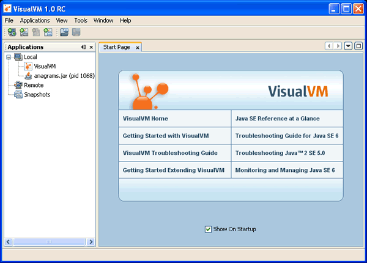

Введение в VisualVM (средство VisualVM)
Примечание: эта страница также доступна на японском  ,
упрощённом китайском
,
упрощённом китайском  и
корейском
и
корейском  .
.
VisualVM — это средство с визуальным интерфейсом для просмотра подробных сведений о приложениях на технологии Java (приложениях Java), пока они выполняются на JVM (Java Virtual Machine, виртуальная машина Java). VisualVM упорядочивает данные о программном обеспечении JVM, которые получают инструменты JDK (Java Development Kit, комплект разработки Java), и представляет сведения так, чтобы можно было быстро просматривать данные сразу по нескольким приложениям Java. Можно просматривать данные о локальных приложениях и о приложениях, выполняющихся на удалённых узлах. Кроме того, можно снимать данные об экземплярах программного обеспечения JVM, сохранять их на локальный компьютер и позднее просматривать или передавать другим.
Чтобы воспользоваться всеми возможностями Java VisualVM, следует использовать платформу Java Platform, Standard Edition (Java SE) версии 6.
Запуск VisualVM
После загрузки и распаковки zip-архива VisualVM на локальный компьютер перейдите в каталог bin развёрнутого архива и дважды щёлкните исполняемый файл VisualVM либо введите в командной строке (оболочке) следующее:
visualvm
При первом запуске VisualVM предлагается принять лицензионное соглашение.
Каталог пользователя VisualVM
В Windows расположение userdir VisualVM по умолчанию такое:
C:\Documents and Settings\<USER>\Application Data\.visualvm\FCS
Чтобы узнать расположение userdir VisualVM, выберите в главном меню Help (Справка) > About (О программе) и в окне About VisualVM (О программе VisualVM) нажмите Details (подробности).
Окна VisualVM
При запуске VisualVM открывается главное окно VisualVM. Главное окно VisualVM разделено на две области.

При первом запуске VisualVM слева видно окно Applications (приложения), а справа в главном окне —
страница Start Page (стартовая страница).
На стартовой странице собраны ссылки на веб-страницы документации VisualVM и дополнительные материалы.
Примечание: страница Start Page по умолчанию открывается при каждом запуске VisualVM.
Открыть Start Page в любой момент можно командой Help (Справка) > Start Page (стартовая страница) в главном меню. Стартовую страницу можно скрыть, сняв флажок "Show On Startup (показывать при запуске)".
Окно Applications
Окно Applications (приложения) открывается слева в главном окне VisualVM при запуске программы. Окно Applications — главная точка входа для изучения подробностей выполняющихся приложений. Окно Applications использует древовидную структуру, чтобы можно было быстро увидеть приложения на локальной машине и на подключённых удалённых машинах. Из окна Applications также доступны дампы ядра (Solaris/Linux) и сохранённые снимки.
Щелчок правой кнопкой по узлу в окне Applications открывает контекстное меню, в котором можно выполнять действия, связанные с этим узлом, в том числе открывать вкладки приложения, снимать Heap Dump (снимок кучи) и Thread Dump (снимок потоков) и открывать снимки в главном окне.
Подробнее о том, как с помощью окна Applications просматривать и сохранять данные, см. на следующих страницах:
- Работа с окном Applications (приложения)
- Работа с локальными приложениями
- Работа с удалёнными приложениями
- Работа с VM Coredumps (дампами ядра ВМ)
- Работа со Snapshots (снимками)
Главное окно
Подробные сведения о приложениях отображаются в главном окне. При просмотре данных о приложении каждое приложение представлено вкладкой в главном окне, что позволяет удобно просматривать данные и переходить между ними. Сохранённые снимки потоков и снимки кучи также открываются в главном окне.
Сведения о данных приложения, которые можно отобразить в главном окне, см. на следующих страницах:
- Вкладка Overview приложения (обзор)
- Мониторинг приложения на вкладке Monitor (мониторинг)
- Мониторинг потоков на вкладке Threads (потоки)
- Просмотр Heap Dump (снимка кучи)
- Профилирование приложения на вкладке Profiler (профилировщик) (только локальные приложения)
- Вкладка MBeans (управляемые компоненты) (требуется модуль MBeans)
Модули VisualVM
Возможности VisualVM можно расширить, установив модули из центра модулей VisualVM с помощью диспетчера Plugins (модули). Функциональность VisualVM также можно расширять, разрабатывая собственные модули и затем добавляя их в центр обновлений.
Например, установка модуля VisualVM-MBeans добавляет на вкладку приложения вкладку MBeans (управляемые компоненты), с которой можно наблюдать за MBeans и управлять ими прямо из VisualVM.
Чтобы установить модуль VisualVM:
- В главном меню выберите Tools (Сервис) > Plugins (модули).
- На вкладке Available Plugins (доступные модули) отметьте флажок Install (установить) у нужного модуля. Нажмите Install (установить).
- Пройдите шаги мастера установки модуля и завершите установку.

Подробнее о создании модулей VisualVM см. в следующих документах: